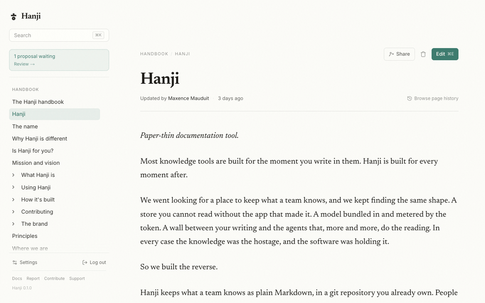
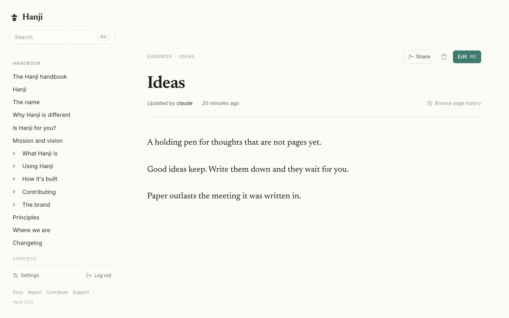
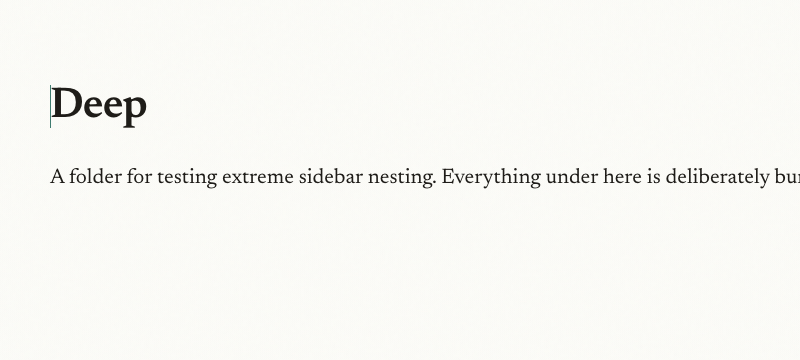
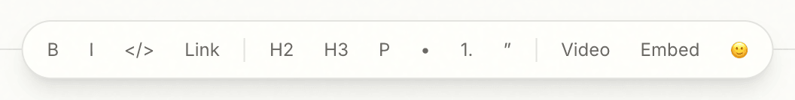
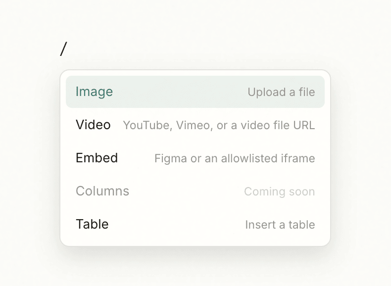
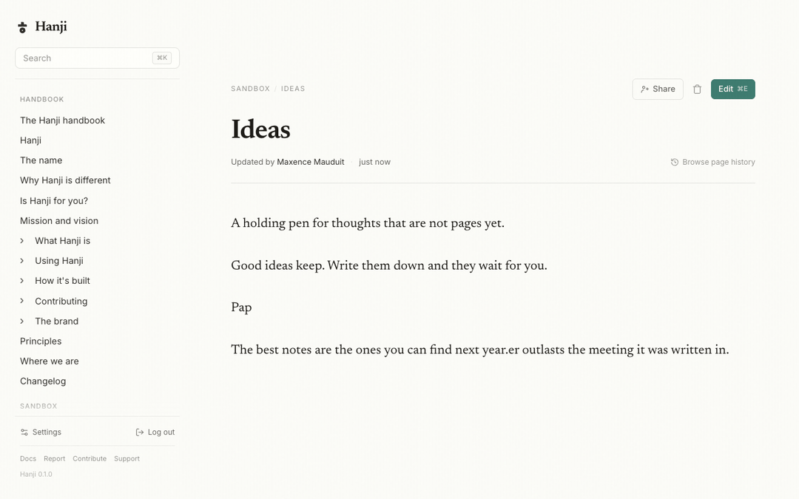

Reading and writing
Everything here happens at http://localhost:4100, after you sign in as the owner. It is meant to feel like an editorial tool, not a git client.
Reading
Pages open on warm paper, set in a serif for long reading. The sidebar on the left is your mounts and their folders, nested and collapsible, and it expands to show where you are. A breadcrumb across the top tells you the path, collapsing its middle on deep pages so it never runs off the screen. Wikilinks, written [[by title]], resolve to the page they name, and only to pages you are allowed to open.
Search is a keystroke away. ⌘K opens the palette: ranked results with the matching passage highlighted, your recently changed pages when the box is still empty, and the keyboard all the way to Enter. When you want to dig, the full results page holds every match with highlighted passages and per-mount filters. Multi-word queries rank pages by how many of your words they share, adjacent phrases first, and the word you are still typing already matches as a prefix.

Writing
Editing is deliberate, and it is one gesture.
- Press Edit, or
⌘E. The page becomes editable in place, on the same measure you were reading. - Change what you came to change. It is a real editor: Markdown shortcuts, a slash menu to insert, tables with handles, task lists, images, embeds, and emoji (the toolbar's picker, or type
:and a few letters). - Press Update. Hanji writes a single commit behind the scenes, with a clean message, and drops you back into reading.
If you changed nothing, nothing is committed. There is no draft state to babysit, and no save button that lies. And because edits are byte-fidelity, the commit for a one-word fix is a one-line diff. See Byte-fidelity.




When two edits collide
Hanji notices if the page changed underneath you between the moment you opened the editor and the moment you pressed Update. Rather than overwrite the newer version, it stops and tells you, so you never clobber a change you did not see. Reload, reapply your edit on top of the current page, and Update again.
New pages
Making a page is the same gesture pointed at a path that does not exist yet. The fastest way is the + that appears at the end of every sidebar row: on a mount it creates at the root, on a folder it creates inside it, and on a page it nests, converting that page into its section's landing with the new page beneath. Give it a title, write, and Update. That first Update is the commit that creates the file.
Organizing the sheet
The sidebar is not just a map. It is where you arrange the collection.
- Move: drag a page or folder onto another folder, or onto a mount's header for its root. A folder brings everything inside it, and the commit behind the drop is a real
git mv, so history follows the page. - Reorder: drop on the edge of a sibling row, where the insertion line shows. Hanji writes the new arrangement into the pages'
order:frontmatter, as one commit. - Nest: drop onto the middle of a page and it becomes a section landing with the dragged page inside, the same conversion the + performs.
- The rail too: drag one mount header onto another to reorder the mounts themselves.
Drops apply instantly; git catches up behind. If something blocks a move, the tree snaps back and a toast tells you why. And if you were reading the page you just moved, the address quietly follows it.
Deleting
Next to Edit sits a quiet trash. The first click arms it into an explicit red question, the second deletes: a git rm and one commit. Deleting a section landing takes its children with it, the inverse of nesting. Nothing is ever truly gone, though. The repository remembers every sheet, and history can bring one back.
History
Every page carries its past. Open its history to see who changed it and when, as a list of revisions with a byline, and open any revision to read the page as it was then. Because the store is git, this is not a feature bolted on top. It is the commits, shown well.

Read Agents next, to let a coding agent read and propose against these same pages.